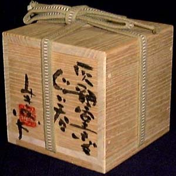
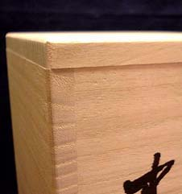
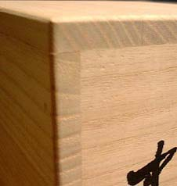
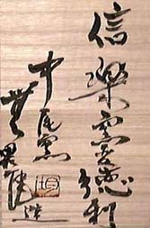
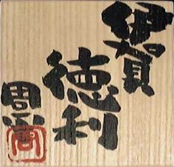

| The
Box
Japanese pottery boxes are works of art in their own right.
Report by Robert Yellin
In the West, one never really pays much attention to the box after
receiving a gift or after making a purchase for oneself. It's simply
there to hold the contents and then be thrown away. It doesn't really
tell us anything about the contents other than possibly the status
of the store.
Not so for most Japanese goods. Wrapping here in Japan is a very
serious business. The box for most artwork is a work of art in itself
and often has splendid calligraphy written by the potter.

An interesting anecdote concerning Japanese wooden boxes concerns
the eccentric potter-gourmet Rosanjin. On a trip to Europe in 1954,
he paid a visit to Picasso. This is how Sidney Cardozo writes about
that encounter in his book The Art of Rosanjin.
When Rosanjin did call on Picasso, he brought this most renowned
Western artist an example of his potting. Naturally it was in
the finest of paulownia wood boxes. Picasso was fascinated by
the smoothness of the wood and glowed with pleasure as he stroked
the surface. Impatiently, Rosanjin thundered "Not the box,
not the box, you simple child! What I made is inside the box!"
I can't imagine who was more surprised. As a side note, a master
craftsman usually makes the box, smoothing the surface and joining
it with wooden nails or just by joinery alone to other parts.
The potter will carefully select a tying rope that adds a little
class to the package as well as for keeping the lid in place. There
is a certain way to put the lid on and how to tie it. For example,
the below photo shows the grain of the box and the lid not matching
up. This is the improper way.

But in the next photo, the grain matches up and forms a square.
This is the proper way.

Some potters even stamp the box and the lid to show where the sides
should line up.
The value of a box, moreover, plays a significant role in determining
the price of the contents. In Japan the value of an artwork can
be halved if there is no original signed box. If there's a box signed
by the artist's son or apprentice, this will also decrease the value
as opposed to a piece that was in an original box signed by the
artist himself. When we're talking about large ticket items, say
an Arakawa Toyozo chawan, it can mean the difference between quite
a handful of yen.
So, that's one big reason to keep boxes in good condition. Further,
many galleries and collectors often wrap the boxes to keep them
in pristine condition ?and thus fetch a higher price.
I had the misfortune once of having a few kittens relieve themselves
on a few boxes! How could this happen, you may ask. Well, in my
rather old Japanese home, I have a room with a small rectangular
closet located over a larger closet. I stored my boxes up there.
Most old Japanese homes utilize a post and beam construction, and
the roof often has an open area inside. One of my cats found a hole
in the roof or the straw-mud walls and got in. Then it found the
closet somehow and had a small litter.
I thought I heard some meowing and sure enough, there they were,
snuggly curled up amongst my tomobako! Fur, wee-wee stains, the
whole package. I got them out, only after the mother darted out
of the closet, jumped nimbly between my pottery collection (nothing
got broken) and made it for the front door. Needless to say, I've
since covered up their entry tunnel.
A box also protects a piece from moisture in the summer and other
natural elements.
As
many know, calligraphy is a highly respected art form in the east
and many a potter is also quite adept with a brush. Some of the
writing on boxes is wispy and gives off the feeling of incense smoke
drifting away (left). Others write with strokes that are bold and
forceful and imbued with a determined spontaneity (below).

Many times a tomobako will have a piece of paper over
it. This is to protect the calligraphy.
The writing usually begins on the upper right hand corner of the
side, or the top of the lid or underside of the lid. Some potters
even sign the bottom of the box itself, so be sure to give the box
a good looking over.
The calligraphy can tell the style, the form, any special glazes,
the year, and the name of the kiln. Most potters usually sign only
their first name on the lower left.
The box indeed plays a significant role in the value and protection
of most Japanese pottery, despite the fact that the greatest joy
comes from taking the piece out of the box and appreciating it in
our daily lives.
Wait, don't throw that box out!
Article courtesy of Robert Yellin,
e-yakimono.net. ©
R. Yellin
More Articles
|